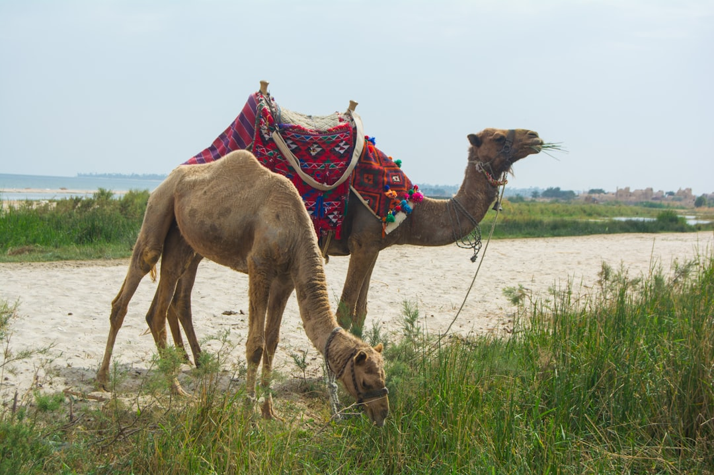

Location
Fayoum Oasis
Best Time to Visit
September to May
Perfect For
Art, Pottery, Relaxing escapes
About Tunis Village
Overlooking the vast saltwater Lake Qarun and nestled along the edge of the Fayoum Oasis desert, Tunis Village is an incredible success story of sustainable rural tourism. Characterized by its vibrantly painted mud-brick houses, lush green farms, and peaceful atmosphere, it feels a world away from the busy streets of Cairo despite being only a two-hour drive away.
The village is primarily famous for its local pottery and artisanal crafts. Dozens of small studios line its dirt roads, offering workshops for visitors and showcasing gorgeously glazed plates, bowls, and decorations heavily inspired by local flora and fauna.
Interesting Facts
- The pottery movement was started in the 1980s by a Swiss potter, Evelyne Porret, who fell in love with the village and opened a pottery school for local children.
- Every year, the village hosts the renowned Tunis Pottery Festival, drawing artists from all over Egypt and beyond.
- Bird-watching is massive here, as Lake Qarun provides a resting point for thousands of migrating flamingos and other bird species.
- Contact Us
Photo Highlights

